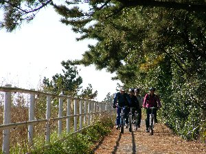
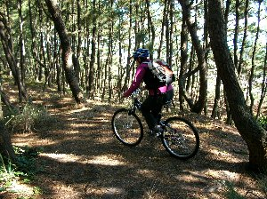
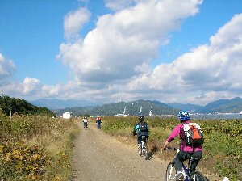
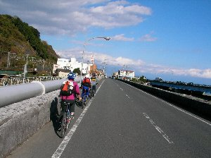
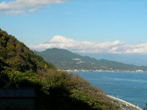

美保から薩垂峠 チャリンコ | 2006年12月 |
|---|---|
| ＳＴＡＲＴは清水駅。無料駐車完了・・・釣りの親父達に感謝！！ 天気も良く、風もなく、この時期にしては暖かいのではないでしょうか。 ＮさんはＴシャツ姿。 俺は前日風邪を引いてしまって、今日も頭痛で、悪化させたく無かったから、暑くもなく、寒くもない微妙に調整した格好。 おっととっと。Ｕさん、ヘルメットやスペアタイヤ、等全て忘れたみたい。 まあそんな事もあるよね？ 取りあえず、僕のヘルメットを貸して、GO〜♪ | |
|  美保の海岸沿いを。 |  美保の防風林の中を。これ、楽しい♪ |
| サイクリング道を通りながら、三保方面へ進む。道は平坦だから、快適、快適。 海岸へ出て、途中松林を走るが、これまた程良い凸凹と砂地、そして木の根を越えたり、面白い。 タイヤが細い私のチャリは砂地で沈む沈む・・・これもまた楽しい。 海辺は気持ち良いね。色々な人達がいる。スキューバ、どこかの大学の陸上部。ウインド・サーフィン・・・風が無くて、大変そうだ。家族連れも沢山いる。 Ｋさんの出身高校の横を通り過ぎた。マラソンで浜辺を走ったらしい、大変そうだ。どんな高校生だったのでしょうね？ Ｎさんも某大学の海洋学部、すぐ側だ・・・どんな大学生だったのでしょうね？ そうこうする内に、灯台へは１２時頃に着いた。当初計画は１１時だったんだけど・・・かなり遅い。自分のいつものペースで考えていた訳ではないけど、読みがかなり甘かった・・・反省<m(__)m>。 昼飯予定の由比まではまだまだ時間が掛かりそうだ。 まあでも、コンビニで軽く何か買っても良いし、問題なし！！ 今回唯一の峠である、薩垂峠（標高１００ｍ）まではずっと平坦な道で、楽々サイクリングが続く(*^,^*)。 | |
|  さあ、もうすぐ美保の先端だ！ 美保飛行場横位 |  薩垂峠へ向けて。 |
| さて、今回の核心部の峠へ突入。まだなだらかな出だしの坂道で、Ｋさん息が上がりそう。ガンバっ。その内、本格的な登りなる。段々スピードが落ちて行く。 が、アッと言う間に終わる。 それぞれのペースでみんな登り切った。 ここは名所であり、車がひっきりなしに来ます。 車は県外ナンバーが多いですね。 意外にも有名なのかな？ チャリンコで来る人は僕ら以外で１人だけ見かけました。 でも、こういう所はチャリもいいですよ。周りの風景をより身近に感じられるし、気に入った所ですぐに立ち止まれる。何にせよ、気持ち良いですよ〜(^^)V。 「薩垂峠・・・古くから富士山を望む景勝地として名高い名所だった峠は、箱根、宇津ノ谷、日坂と並び街道の難所として知られていました。 地元の漁師の網にかかって引き上げられた地蔵菩薩像（さったの地蔵）を山上に祀ったことからその名が付いたと言われます。 歌川広重が描いた当時とほぼ同じ風景が望めるのは、五十三次の中でもここだけと言われる名勝です。 蒼い駿河湾越しに見える富士山の美しさは訪れた人の心をとらえて離しません。」と、どこかに書いてありました。 富士山が６割ほど雲に隠れてしまって、少し残念。しかし、Ｂさんのカメラで取りあえず記念撮影しました。 | |
 薩垂峠駐車場。白く飛んじゃったけど後ろに富士山 |  ほらね、富士山見えるでしょ。 |
| これからは下りだ。下りは楽なのだが、 道は細くて、車が結構来るので気をつけて下ろう。 眼下に走る国１の車を眺めながら、ゆっくり下る。 昔ながらの町並みがこれまたいいね。 そしてやっと昼飯にありつける・・・腹減った〜。 由比駅前の店で桜エビ定食を食べる。 ほどよい塩気、旨味、カリカリの食感。 やっぱり美味いね〜。これは静岡の味だね〜。 運動して、美味い物食べる。 すっごく幸せ(*^,^*)。 これ一番のストレス解消っぽいな(笑)。 | |
 結構な坂でしょ。 |  桜エビ定食。美味しかった〜 |
| 食べ終わって満足した事もあるけれど、 時間を見てここでゴールにする。 電車で車を取りに行って、帰りはすっごく田舎でこんな所にあるの？って感じの温泉へ寄って帰宅。 スポーツ・ライクなサイクリングも良いけれど、今回みたいにポタリングも楽しいなY(^^)ピース!。 注：文中で使用している「薩垂峠」の「垂」は正確には左に「土へん」が付くそうです。 写真：べっしー、コメント：キッカー | |